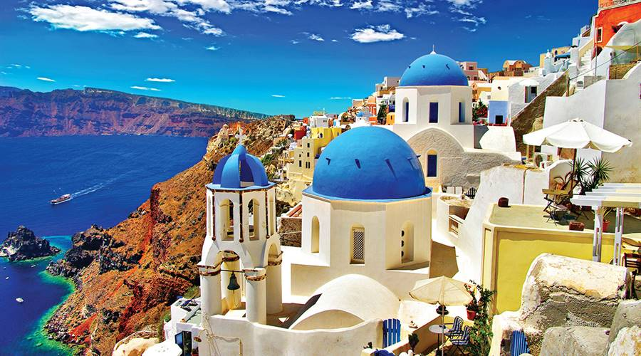

Must-Visit Attractions

Oia Village
Famous for its stunning sunsets, Oia is a picturesque village with whitewashed buildings and blue-domed churches, making it one of the most photographed spots in Greece.
Quick Facts
- 🏙️ Known for: Beautiful sunsets
- 📍 Location: Northwestern tip of Santorini
- ⏱️ Suggested Visit: 2-3 hours
Fira Town
The vibrant capital of Santorini, Fira offers stunning views of the caldera, bustling shops, and a lively nightlife. Don't miss the Archaeological Museum of Thera.
Quick Facts
- 🏛️ Highlights: Archaeological Museum
- 🍽️ Dining: Numerous restaurants with caldera views
- ⏱️ Suggested Visit: 3-4 hours

Ancient Akrotiri
A significant archaeological site, Akrotiri was a Minoan Bronze Age settlement buried in volcanic ash. Visitors can explore the well-preserved ruins and learn about the island's history.
Quick Facts
- 🕒 Opening Hours: 8:00 AM - 8:00 PM
- 💶 Entry Fee: €12
- ⏱️ Suggested Visit: 1-2 hours
Red Beach
Renowned for its unique red volcanic sand, Red Beach is a stunning location for sunbathing and swimming, surrounded by towering red cliffs.
Quick Facts
- 🏖️ Activities: Swimming, Sunbathing
- 🍴 Facilities: Beach bars available
- ⏱️ Suggested Visit: 1-2 hours